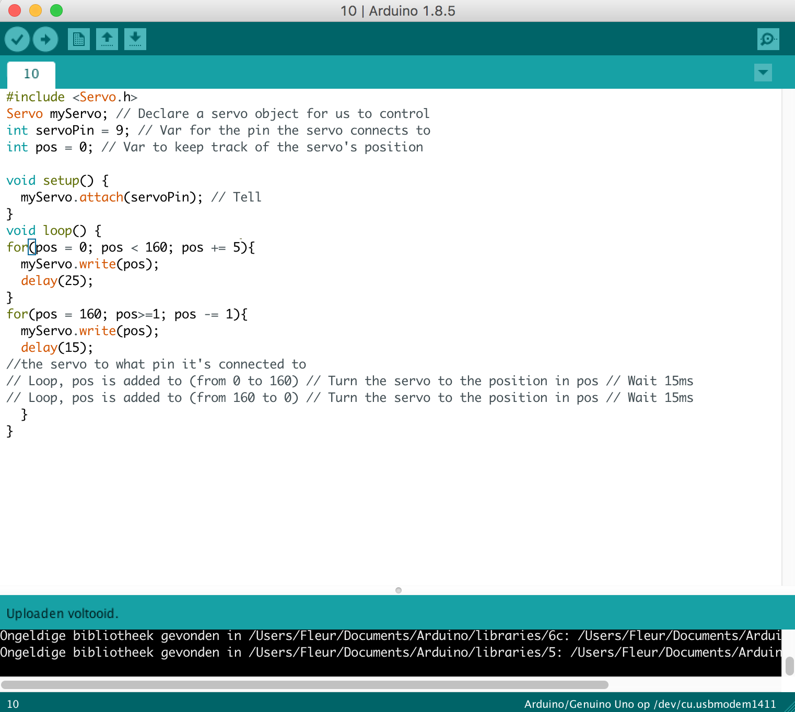

Artuino
werkcollege 3 + 4
Vraag 3c
Bij deze opdracht heb ik gebruik gemaakt van twee led lichtjes, 4 jumping cordes en twee ohm meters(rood rood zwart zwart bruin). Het is belangrijk dat het korte pootje van het led lichtje op dezelfde rij zit als het jumping coard. Als dit niet zo is werkt het lichtje niet. Dit geld zovel voor het rode en oranje lichtje. Het arduino bord is de basis van het programma en daarom is het belangrijk dat de lichtjes op de juiste lijn zitten met de snoertjes die aan dit bord zijn vastgemaakt. Poort 13 is voor het groene lichtje en poort 12 is voor het oranje lichtje. Het delayed zorgt ervoor hoe lang het licht aan of uit staat. High staat voor aan en low voor uit. Door hier mee te spelen zorg je ervoor hoe lang het lichtje aan of uit staat. De positionering van de hight, low en delayed zorgen voor de uitwerking.
Vraag 4c
Er wordt weer gebruik gemaakt van dezelfde onderdelen alleen dan in een andere positie. De jumping cords zitten nu in GRN(zwart draadje gekoppeld aan 13), 10(zwart draadje naar 18) en 9(geel draadje naar 25). Bij deze opdracht is er gebruik gemaakt van integers om de de poorten aan te geven waar het groene en gele licht zijn aangesloten. Om het licht feller of minder fel te maken gaat het door een for-loop. De loop gaat van 0 tot 256, wat zorgt voor de felheid van het licht. Bij het groene licht wordt er steeds 1 bij opgeteld door de brightness++. Bij het gele licht wordt er steeds 1 afgetrokken, dit komt door de 255-brightness. Als hier het getal 256 ingevuld wordt werkt het niet, omdat de loop maar gaat tot en met 255. Het groene licht wordt dus feller en het oranje licht wordt minder fel.
Vraag 6c
Bij deze opdracht heb ik de potentiometer en 3 snoertjes toegevoegd. De drie snoertjes die zijn toegevoegd moeten in dezelfde lijn zitten als de de puntjes van de potentiometer in het bord. De meter zorgt ervoor dat je het licht kunt dimmen. De getallen van het dimlicht zitten tussen de 0 en 1023, maar de lichten werken met een getal tussen de 0 en 255, dus moet er een regel code worden toegevoegd zodat het werkt voor de lichten. Eerst heb ik van de sensorValue een float gemaakt ipv integer, omdat anders alleen het getal 0 of 255 wordt afgebeeld. Je wilt de getallen die hier tussen staan weten, vandaar dat je er een float van maakt.
Vraag 7
Tijdens
Vraag 8b
Processing en Arduino werken hier samen. Het is daarom belangrijk dat de goeie port wordt gebruikt in processing. Arduino is mijn tweede port dus in processing is dit 1, want het is een erray. De codes zijn aan elkaar gelinkt en zorgen ervoor dat het figuur groter of kleiner wordt. In plaats van een rondje heb ik nu een rectangle gedaan. De sensor is heel gevoelig en per persoon is dit anders, daarom moet je de sensor eerst goed instellen. Als je je vinger op de sensor doet wordt het rondje kleiner.
Vraag 9f

Bij deze opdracht zijn er knopjes toegevoegd om de lichtjes aan en uit te zetten. High is aan, low is uit. Het is de bedoeling dat als je op knopje 1 of op knopje 2 drukt, het lichtje aan gaat. En als je op beide knopjes drukt moet het lichtje uit zijn. Om hiervoor te zorgen heb ik gebruik gemaakt van if statements. Als lichtje 2 en 3 aan ingedrukt zijn is het lichtje uit. Als lichtje 2 of lichtje 3 aan staat is het lichtje aan. Als niks ingerukt is, is het lichtje ook uit.
Vraag 10b
Met deze code wordt de propellor aangestuurd. De pos (propellor) heeft namelijk een waarde van 0 tot 160. Het start punt is 0 en het eind punt is 160. Er zijn twee forloops gemaakt, waarin de eerste loop er steeds + 5 wordt gedaan, zodat de propellor snel draait. En op de terugweg gaat de propellor weer terug, maar dan langzamer. Hier wordt er -1 gedaan.
Vraag 11b
Bij deze opdracht wordt de propeller ook aangestuurd, maar dan via een draaiknop. Er worden eerst twee integers aangemaakt die het naar links en naar rechts draaien aangeven. Er zijn daarom twee if statements aangemaakt. De eerste if-statement zorgt ervoor dat als je naar links draait het getal van 0 naar 160 gaat en de propeller gaat draaien. Bij de tweede if statement gaat het getal juist van 160 naar 0, omdat als je naar rechts draait het minder wordt. Om ervoor te zorgen dat de propeller niet op hol slaat, wordt er een range aangegeven. Het getal van de draaier kan namelijk hoger zijn dan 160, maar als dat gebeurd maakt het een raar geluid. Nu wordt er aangegeven dat 160 de hoogste is en 0 de laagste.
Vraag 12b
Bij deze opdracht wordt er gebruik gemaakt van de tone speaker. Je stuurt zelf het aantal hertz aan, van hoe hard het geluid moet gaan. Het eerste getal is het aantal hertz en het tweede getal is voor hoelang (speakerPin, 311, 200). Daarna komt een delay, wat ervoor zorgt dat er een pauze tussen het geluid zit.
Vraag 13
Deze vraag heb ik helaas niet afgekregen. Vanaf 13b ging het fout, de sensor gaf zijn waarden niet waar in het venster weer